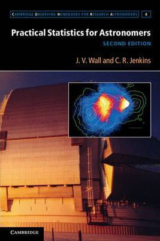
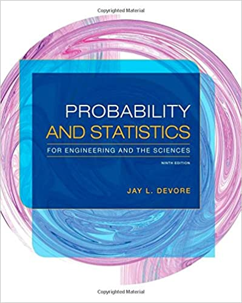

Estadística para ciencias físicas
LFIS 325 - 2022/02
Eloy Alvarado Narváez
Universidad de Valparaíso
25/08/22
Bienvenida y presentación
Descripción del curso
Es un curso teórico/práctico de modalidad presencial, de nivel intermedio, cuya misión es introducir al estudiante a las principales herramientas de análisis. El curso está orientado a desarrollar en el estudiante la capacidad de transformar los datos de que dispone tanto para extraer información útil como también para facilitar las conclusiones. Aprenderá los conceptos de la teoría de la probabilidad y la inferencia estadística que se utilizan para interpretar datos experimentales. Abordará los problemas tanto desde una perspectiva teórica como con trabajos prácticos.
Horario de clases
| Día | Horario | Lugar | |
|---|---|---|---|
| Cátedra #1 | Jueves | 08:30 am - 10:00 am | Juan Mouat |
| Cátedra #2 | Viernes | 14:30 pm - 16:00 pm | Juan Mouat |
| Cátedra #3 | Viernes | 16:15 pm - 17:45 pm | Juan Mouat |
Página del curso
Utilizaremos el Aula Virtual/Google Classroom y el sitio https://lfis325-2022-02.netlify.com/. Ambas páginas tendrán la misma información, sin embargo, para efectos de entrega de informes, el medio oficial será el Aula Virtual/Google Classroom.
Softwares
Para la mayoría de las aplicaciones utilizaremos R, por lo que se sugiere utilizar un IDE como RStudio.
Para la entrega de informes y talleres que requieran uso de programación, se recomienda el uso de Rmarkdown, Jupyter Notebook o \(\LaTeX\) para la confección de documentos a entregar.
Bibliografía
La bibliografía principal del curso es:



Programa oficial
El programa oficial del curso está disponible acá
Introducción a la Estadística
- Proceso Estadístico
- Tipos de muestreo
- Medidas de tendencia muestral
- Tablas de frecuencia
- Tipos de gráficos
Probabilidad en la ciencia
- Decisión y probabilidad
- Teorema de Bayes
- Inferencia y probabilidad
- Análisis de error simple
- Uso de la estadística
Modelamiento de datos: Estimación de parámetros
- El método de la probabilidad máxima
- Mínimos cuadrados
- Análisis Bayesiano
- Modelamiento Monte Carlo
- Modelo de modelos y combinación de conjunto de datos
Detección y Búsqueda
- Detección
- Catálogos y efectos de selección
- El límite de confusión
Estadística en 1D y 2D
- Transformaciones de datos
- Análisis de Fourier
- Filtrado
- Correlacionamiento
- Estadística sobre una superficie
- Representación del cielo
- Función correlación angular de dos puntos
- El espectro de potencia angular
Cadenas de Markov Monte Carlo
- Algoritmo de Metrópolis-Hastings
- Comparación de modelos
- Aplicaciones.
Ponderaciones
La metodología de evaluación es la siguiente:
| Tipo de evaluación | Porcentaje que corresponde |
|---|---|
| Evaluaciones sumativas (2) | 50% |
| Presentaciones | 30% |
| Trabajo final | 20% |
Metodología del curso
Antes de cada sesión, se mandará una lectura de preparación para la sesión
El enfoque principal será teórico, pero sin dejar de lado las aplicaciones
Se pondrá a disposición material adicional para estudiar:
- Ejemplos y ejercicios teóricos
- Códigos
El curso será mayoritariamente autocontenido, pero requiere al menos conocimiento básico cálculo y programación.
¿Preguntas?
Introducción
Proceso Estadístico
La estadística es la ciencia encargada de la descripción, organización, presentación de datos y además la obtención de conclusiones basadas en los datos experimentales; a esto le llamamos inferencia, la cual es inductiva debido a que se proyecta de lo específico hacia lo general.
Al ser una ciencia, esta se rige al método científico.
Diagrama del proceso estadístico
¿Por qué el uso de la estadística en Física?
- Cuantificación del error: Errores propios y externos, ¿Qué significan?
- ¿Cómo pueden nuestros datos ser utilizados de la mejor manera posible? o ¿Pueden ser usados?
- Correlaciones, test de hipótesis y modelación: ¿Como se procede?
- Muestras incompletas, datos de un experimento que no puede ser replicado ¿Cómo se trabajo con este tipo de datos?
- La presentación de datos y conclusión siempre vienen -inherentemente- en términos estadísticos.
- El proceso de decisión no puede ser realizado sin una metodología, sin importar que tan bueno sea el experimento.
Procedimiento de un experimento
- Observar: Registrar u obtener los datos.
- Reducir: Limpiar los datos para eliminar efectos experimentales: corrección flat-field, calibración, etc.
- Analizar: Obtener los números desde una base de datos limpia: intensidades, posiciones, etcétera. A partir de esta información, producir indicadores que permitan comparar o modelar. Estos indicadores son llamados estadísticos y determinan el diseño de experimentos.
- Conclusión: Llevar a cabo un procedimiento para llegar a una conclusión. Test de hipótesis; correlación, modelos, etc.
- Reflexión: ¿Qué se aprendió? ¿Es la decisión viable? ¿Fue inesperada? ¿En qué paso del experimiento se debe examinar para verificar? ¿Qué es necesario para confimar un resultado inesperado? ¿Cómo se debe realizar el siguiente experimento? ¿Se extenderá la hipótesis realizada o se sugerirá una nueva hipótesis?
Introducción al Muestreo
El mundo empírico está compuesto por un sin fin de conjuntos de elementos, tales como: personas, animales, objetos, etc., habitualmente de cantidades suficientemente grandes, cuyo trabajo de recopilación y posterior análisis para obtener alguna información de interés de ésta, resulta impracticable en tiempos reales. Estos conjuntos de elementos son llamados población o población objetivo, que en una investigación, debe quedar claramente acotada, geográficamente o en el tiempo.
Un mecanismo más apropiado para obtener información es la extracción de un subconjunto de unidades o elementos a la cual realizar el análisis y obtener un diagnóstico de la población. Este subconjunto de unidades o elementos es llamado muestra.
Diagrama de una muestra
Tipos de Muestreo
- Muestreo no Probabilístico: Los resultados obtenidos sólo representan las características de los elementos muestrados y no de la población
- Muestreo por conveniencia
- Muestreo consecutivo
- Muestreo por cuotas
- Muestreo de bola de nieve. (Muestreo en cadena).
- Muestreo Probabilístico: Cada uno de los elementos de la población de interés, o población objetivo, tiene una probabilidad conocida (frecuentemente igual) de ser elegidos en la muestra.
Muestreo Aleatorio simple y sistemático
Muestreo Aleatorio Simple: Los elementos se escogen en forma individual y al azar de la totalidad de la población, es decir, se escogen sin ningún privilegio y cada uno posee la misma probabilidad de formar parte de la muestra en cada una de las posibles muestras.
Muestreo Aleatorio Sistemático: Existe un plan de muestreo al azar, en la cual se eligen los elementos de la población a intervalos uniformes, a partir de un listado (ordenado), tal como elegir cada \(k-\)ésimo elemento después de un arranque aleatorio.
Muestreo estratificado
- Muestreo Aleatorio Estratificado: La característica que se está midiendo en la población objetivo, presenta mucha dispersión en grupos identificados, por lo tanto, lo primero que se debe hacer es estratificar los elementos de la población en subgrupos y excluyentes de acuerdo al comportamiento que presenta la característica dentro de estos grupos.
Posterior a la clasificación de los elementos de la población en grupos, se obtiene por separado una muestra aleatoria simple o sistemática de cada estrato.
Tipos de Variable
Variables Cualitativas: Cuando los elementos de una población son clasificados en categorías o clases excluyentes, se habla de variables cualitativas. Ejemplos: estado civil, lugar de procedencia, marca de artículos, etc.
Variables Cuantitativas (o Numéricas): Si los posibles valores para los elementos de una población, son cantidades o números, se habla de variables cuantitativas. Ejemplos: kms por litro de gasolina de un auto, temperatura, duración de un examen, etc.
- Discretas: Se habla de variables discretas, cuando el conjunto de valores posibles es finito o infinito numerable. Ejemplos: Cantidad de crías por camada, número de alumnos por carrera, etc.
- Continuas: Son aquellas que pueden asumir infinitos valores. Ejemplos: sueldo de una persona, tiempo que tarda un animal en alcanzar un peso previamente determinado, etc.
Escalas de medición
- Escalas de Medición para variables cualitativas:
- Nominal: Es aquella escala en donde las categorías (o los posibles valores de la variable), no pueden ser ordenadas en un sentido de magnitud. Ejemplos: colores, profesión, etc.
- Ordinal: Cuando las categorías admiten una ordenación (no alfabética), se habla de escala ordinal. Ejemplo: Nivel Socio-económico (alto, medio o bajo), sistema de evaluación cualitativa (insuficiente, suficiente, bueno, muy bueno), etc.
- Escalas de Medición para variables cuantitativas:
- Intervalar: Son aquellas que poseen un punto de referencia (o cero) relativo, en el sentido de que si se cambia de unidad de medición, el punto de referencia difiere entre una unidad de medida y otra. Ejemplo: temperatura (Celcius - Fahrenheit).
- Razón: Son aquellas que poseen un cero absoluto (es decir, único). Incluso permiten hacer comparaciones por cocientes. Ejemplo: Peso de una persona, distancias, etc.
Estadística Descriptiva
Organización de los datos
La organización de los datos trata de acomodar éstos para que puedan revelar sus características informativas fundamentales y de esta manera simplificar los análisis para la obtención de conclusiones.
El uso de frecuencia es más natural en datos cualitativos o discretos, pues en estos casos es sencillo contar el número de veces que aparece un mismo dato en la población (muestra) de éstos, en este caso se habla de tabla de frecuencia no agrupadas.
Sin Embargo, cuando se trabaja con datos cuantitativos en escala continua, es muy posible que exista un conjunto de números distintos lo suficientemente grande, como para hacer impracticable lo anterior, en este último caso se procede a crear agrupaciones convenientes para los datos observados, en este caso se habla de tabla de frecuencia agrupadas.
Tabla de frecuencia
En las tablas de frecuencia cada categoría tiene una frecuencia observada, este cálculo es siempre posible en datos cualitativos, sin embargo, si la cantidad de categorías es grande, deja de ser un resumen adecuado para los datos.
Las respuestas observadas en la población (muestra), se denominarán clases, y se simbolizan por: \(C_1,C_2,\dots, C_k\) donde \(k\) es la cantidad de categorías (respuestas) distintas.
Frecuencia absoluta
Se llama frecuencia absoluta de la clase \(C_i\), al número de elementos de la población (muestra) que pertenecen a la clase \(C_i\). Este número lo denotaremos por \(n_i\) y cumplen la propiedad:
\[\sum_{i=1}^{k} n_i =n\]
En donde \(n\) es el tamaño de la población o muestra, según sea el caso.
Frecuencia relativa
Se llama frecuencia relativa de la clase \(C_i\), a la cantidad de elementos en la población (muestra) que pertenecen a la clase \(C_i\), relativo al total de elementos en la población (muestra). Este número lo denotaremos por \(f_i\) y cumplen la propiedad:
\[f_i=\dfrac{n_i}{n} \Rightarrow \sum_{i=1}^{k} f_i = \sum_{i=1}^{k}\dfrac{n_i}{n} = 1\]
Frecuencia absoluta acumulada
Se llama frecuencia absoluta acumulada hasta la clase \(C_i\), al número total de elementos en la población (muestra) que pertenecen a las clases \(C_1,C_2,\dots,C_i\). Este número lo denotaremos por \(N_i\) y cumplen la propiedad:
\[N_i=n_1+n_2+\dots+n_i=\sum_{j=1}^{i}n_j, \hspace{10pt} j=1,2,\dots,i, \hspace{10pt} i=1,2,\dots,k\] y,
\[N_k=n_1+n_2+\dots+n_i+\dots+n_k=n\]
Frecuencia relativa acumulada
Se llama frecuencia relativa acumulada hasta la clase \(C_i\), a la cantidad de elementos en la población (muestra) que pertenecen a las clases \(C_1,C_2,\dots,C_i\), con respecto al total de elementos en la población (muestra). Este número lo denotaremos por \(F_i\) y cumplen la propiedad:
\[F_i=f_1+f_2+\dots+f_i=\sum_{j=1}^{i}f_j, \hspace{10pt} j=1,2,\dots,i, \hspace{10pt} i=1,2,\dots,k\]
Ejemplo: enunciado
En un conjunto de resultados experimentales, se desea determinar la clasificación de los resultados obtenidos. Estos son clasificados como: Malos (M), Regulares (R), Buenos (B) y Excelentes (E). Los datos son:
| B | R | B | E | E | E | M | B | E | R |
| R | M | M | R | R | M | R | B | B | B |
| B | B | E | B | B | B | E | B | E | R |
| E | M | B | B | E | B | B | B | B | B |
| M | R | M | B | B | B | B | E | M | R |
Ejemplo: respuesta
| Frecuencias | Frecuencias | Acumuladas | ||
|---|---|---|---|---|
| Clasificación | Absoluta | Relativa | Absoluta | Relativa |
| Malo | 8 | 16% | 8 | 16% |
| Regular | 9 | 18% | 17 | 34% |
| Buenos | 23 | 46% | 40 | 80% |
| Excelentes | 10 | 20% | 50 | 100% |
Tablas para Variables Continuas
En variables continuas, la organización de datos es un poco más compleja: se dividen los datos en \(k\) grupos o segmentos disjuntos. Estos grupos representan las clases y se determina la frecuencia de datos asociado a cada grupo, conformando una tabla de frecuencia agrupada.
En este tipo de datos las clases están compuestas por intervalos, luego es necesario buscar un representante de la frecuencia asociada a este intervalo , el cual se conoce como marca de clase. Es común utilizar como marca de clase al valor medio del segmento (intervalo).
Construcción de la tabla de frecuencia
En la construcción de una tabla de frecuencia, lo primero que se tiene que tener claro es la cantidad de segmentos (intervalos) a considerar. Lo más común es utilizar como una primera aproximación la regla de Sturges.
- Regla de Sturges: El número de clases \(k= 3,3 * \log(n)+1\), donde \(n\) es la cantidad de datos que se desea organizar.
- Amplitud: Para determinar la amplitud de las clases \(a\), se debe calcular el rango \(R_D\), que es la diferencia entre el dato mayor (\(\max x_i\)) y el dato menor (\(\min x_i\)). También es necesario determinar \(u\), la unidad mínima de conteo de los datos. Luego, la amplitud estará dada por:
\[ a=\dfrac{R_D +u}{k}\]
Rango de la tabla
Una vez determinada la amplitud \(a\), se procede a determinar el rango de la tabla \(R_T\), que es la multiplicación entre la cantidad de clases que se están utilizando y la amplitud. Para determinar los límites teóricos de las clases, se comienza con el límite inferior de la primera clase (\(LI_1\)), el cual se calcula como:
\[LI_1=\min x_i - \dfrac{D}{2}\]
Donde la diferencia \(D=R_T-R_D\), en el caso que el último dígito de \(D\) no sea par, se realiza un ajuste conveniente.
Posteriormente, se suma la amplitud a \(LI_1\) obteniéndose el limite superior de esta clase (\(LS_1\)), el que también será el límite inferior de la segunda clase, \(LI_2=LS_1\). Este último se considera abierto para su clase y cerrado para la segunda clase, luego para los siguientes intervalos se realiza el mismo procedimiento anterior.
Tabla general
| Frecuencias | Frecuencias | Acumuladas | ||
|---|---|---|---|---|
| Clases | Absoluta | Relativa | Absoluta | Relativa |
| \([LI_1-LS_1[\) | \(n_1\) | \(f_1\) | \(N_1\) | \(F_1\) |
| \([LI_2-LS_2[\) | \(n_2\) | \(f_2\) | \(N_2\) | \(F_2\) |
| \([LI_3-LS_3[\) | \(n_3\) | \(f_3\) | \(N_3\) | \(F_3\) |
| \(\vdots\) | \(\vdots\) | \(\vdots\) | \(\vdots\) | \(\vdots\) |
| \([LI_k-LS_k[\) | \(n_k\) | \(f_k\) | \(N_k\) | \(F_k\) |
¿Qué veremos la próxima semana?
- Medidas de posición (tendencia central)
- Medidas de variabilidad
- Gráficos
¿Qué deben preparar para la próxima semana?
- Leer capítulo 1 de Probability and Statistics for Engineering and the Sciences, 9th Edition.
LFIS 325 - Semana 1